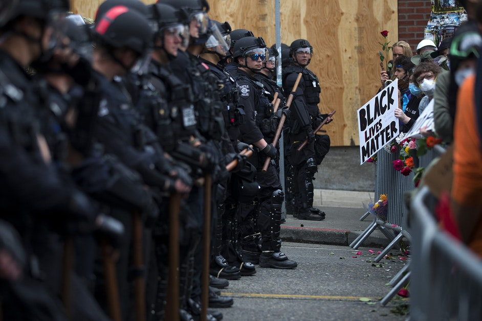

THE FIVE LARGEST PROTESTS IN U.S. HISTORY

Img.1. Protesters hold signs and stand in front of a line of police officers.
The tradition of protests that demand positive change in the United States continues.
Here are five of the top protests in terms of attendance.
- George Floyd protests nationwide in 2020 with an estimated 26 million protestors.
- Earth Day protests in 1970 with 20 million nationwide.
- Women's March in 2017 drew about 5.6 million people nationwide.
- March for our lives, a student-led protest in 2018 against gun violence, drew around 2 million people.
- Women's March brought an estimated 1.5 million people in 2018.